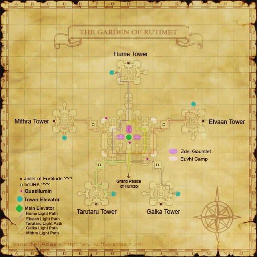
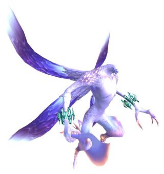
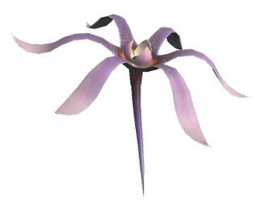
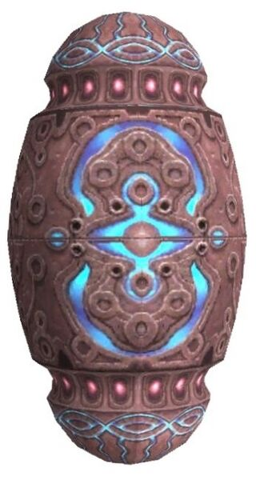
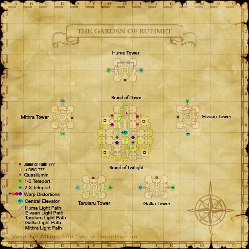
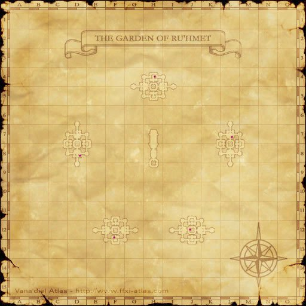
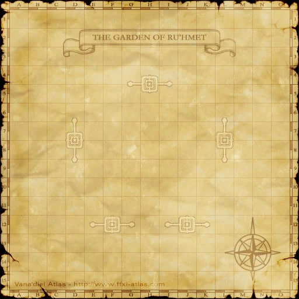
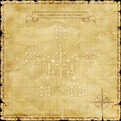

Description
The Garden of Ru'Hmet is a dungeon in Lumoria.
Map

Involved in Quests / Missions
| Quest / Mission | Type | Starter | Location |
|---|---|---|---|
| Apocalypse Nigh | General | Esha'ntarl | Ru'Lude Gardens |
| In the Name of Science | General | Yurim | Tavnazian Safehold (J-8) |
NPCs
| Name | Location | Type |
|---|---|---|
| Quasilumin x10 | Map 1: (H-9), (I-10), (G-7) Map 2: (H-7), (H-8) Map 3: (F-12), (D-8), (H-4), (L-7), (J-12) | — |
Notorious Monsters
| Name | Level | Drops | Steal | Family | Spawns | Notes |
|---|---|---|---|---|---|---|
| Ix'aern (DRK) | 81 | Deed of Moderation Vice of Avarice | — |  AernImage source | — | A, L, T(S) |
| Ix'aern (DRG) | 81 | Deed of Sensibility Vice of Aspersion | — | AernImage source | — | A, L, T(S) |
| Jailer of Faith | 85 | Faith Baghnakhs Faith Torque Third Virtue | — |  EuvhiImage source | — | T(H) |
| Jailer of Fortitude | — | Fortitude Axe Fortitude Torque Second Virtue | — |  GhrahImage source GhrahImage source | — | A,L, T(H) |


Regular Monsters
| Name | Level | Drops | Steal | Family | Spawns | Notes |
|---|---|---|---|---|---|---|
| Aw'aern | 79-84 | Aern Organ Crystal Clusters Luminian Tissue | — | AernImage source | 64 | L, T(S) |
| Aw'euvhi | 78-80 | Crystal Clusters High-Quality Euvhi Organ Euvhi Organ Luminian Tissue | — | EuvhiImage source | 119 | A*, L*, T(H) |
| Aw'ghrah | 79-81 | Crystal Clusters Luminion Chip Ghrah M Chip | — | GhrahImage source | 124 | A*, T(H) |
| Aw'zdei | 80-83 | Luminion Chip | — |  ZdeiImage source | 102 | A, T(S) |

Event Monsters
| Name | Level | Drops | Steal | Family | Spawns | Notes |
|---|---|---|---|---|---|---|
| Ix'zdei | — | — | — | ZdeiImage source | 4 | Spawned Mission: When Angels Fall; A, T(S) |
| Qn'zdei | — | — | — | ZdeiImage source | 16 | Gauntlet; A, T(S) |
Maps



Story walkthroughs in this area
| Story | Mission / quest |
|---|---|
| RoZ Q3 | Apocalypse Nigh |
| CoP 8-2 | A Fate Decided |
| CoP 8-3 | When Angels Fall |
| CoP 8-4 | Dawn |
References
External references describe their own server or retail rules. Documented Zenith changes take precedence.
Map credits: Map 1 — HorizonXI Wiki · Map 2 — HorizonXI Wiki · Map 3 — HorizonXI Wiki · Map 4 — HorizonXI Wiki. Original game maps © SQUARE ENIX; redrawn maps retain the credited authorship and license.


Additional level-75 reference




This area is part of the Celestial Capital of Al'Taieu. Sneak and Invisible are useless here, as everything is either non-aggro or true sight.
This area is only accessible if the Chains of Promathia expansion is installed and Promathia Mission 8-2: A Fate Decided is completed.
Connecting AreasInvolved in Quests/Missions
NPCs Found Here
Notorious Monsters Found Here
Mobs Found Here
| ||||||||||||||||||||||||||||||||||||||||||||||||||||||||||||||||||||||||||||||||||||||||||||||||||||||||||||||||||||||||||||||||||||||||||||||
Adapted from Eden Wiki: The Garden of Ru'Hmet · Contributors and history · CC BY-SA 4.0. Revision 45727. Layout, links and optional background text adapted for Zenith.